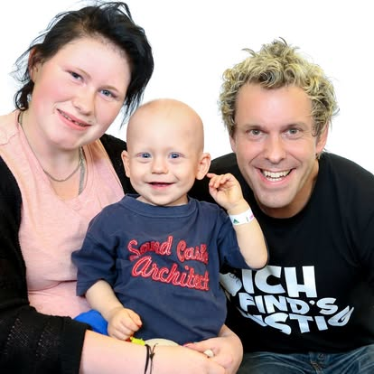

Mit Simon Pierro und Sascha Grammel war es anders als mit Ross Antony oder Nico Rosberg.
Sie kamen nicht mit Spendenschecks, sondern mit Zauberei, Bauchrednerei und viel Humor. Und anders als manche prominenten Besucher standen sie auch nicht plötzlich vor unserer Tür. Ich musste sie erst überzeugen, in unsere Kinderklinik zu kommen.
Der Hintergrund war derselbe wie bei allen kulturellen Angeboten, die wir in unserer neuen Kinderklinik aufgebaut hatten. Viele unserer kleinen Patienten verbrachten Wochen oder sogar Monate auf der Station. Ihr Alltag bestand aus Blutabnahmen, Chemotherapie, Operationen und unzähligen Untersuchungen. Deshalb wollten wir ihnen zwischendurch immer wieder etwas schenken, das mit Krankheit überhaupt nichts zu tun hatte. Sie sollten einfach wieder Kinder sein dürfen.
Aus diesem Grund hatten wir mitten in der neuen Kinderklinik ein richtiges Theater eingerichtet – mit Bühne, Lichttechnik und Platz für kleine und große Aufführungen.

Simon Pierro lernte ich bei einem Firmenauftritt kennen. Seine iPad-Zauberei war damals völlig neu. Plötzlich floss Bier aus einem Tablet oder Gegenstände verschwanden scheinbar im Bildschirm. Man saß daneben und fragte sich ständig, wie das überhaupt möglich sein konnte.
Ich schrieb ihm eine E-Mail. Die Antwort kam schnell und unkompliziert. Er sagte sofort zu und stand kurze Zeit später auf unserer Bühne. Unsere Kinder vergaßen für eine Stunde Infusionsständer, Medikamente und Diagnosen. Sie staunten, lachten und versuchten verzweifelt herauszufinden, wie seine Tricks funktionierten. Simon kam später sogar noch ein zweites Mal vorbei.
Insgeheim musste ich dabei an Eckart von Hirschhausen denken. Ihn hatte ich mehrfach gefragt, ob er nicht einmal mit seinen Zauberkunststücken zu unseren Kindern kommen wolle. Aus der Idee wurde nie etwas. Mit Simon Pierro hatten wir dafür einen großartigen Ersatz gefunden.

Bei Sascha Grammel war der Weg etwas länger. Nicht Sascha selbst, sondern sein Management vertröstete mich zunächst. Er habe im Moment zu viele Termine. Ich möge mich in einem halben Jahr noch einmal melden. Das tat ich. Wieder hieß es: später. Ich blieb hartnäckig. Und irgendwann kam die Zusage.
Sascha Grammel erschien mit seiner kleinen Entourage und nahm sich mehrere Stunden Zeit für unsere Kinder. Kaum begann die Vorstellung, hallte das Theater von Gelächter wider. Seine Puppen führten Gespräche mit den Kindern, machten Quatsch und bezogen sie immer wieder mit ein. Für einen Nachmittag waren nicht Leukämien, Tumoren oder Chemotherapien das wichtigste Thema, sondern eine freche Schildkröte und jede Menge Unsinn.
Genau dafür hatten wir dieses Theater gebaut. Simon Pierro und Sascha Grammel waren zwei ausgesprochen angenehme Menschen. Bescheiden, unkompliziert und ohne jede Starallüre. Ich weiß nicht, ob ihnen damals bewusst war, wie viel sie unseren Kindern geschenkt haben.
Vielleicht war es für sie nur ein Auftritt unter vielen. Für manche unserer kleinen Patienten war es ein Nachmittag, den sie nie wieder vergessen haben.